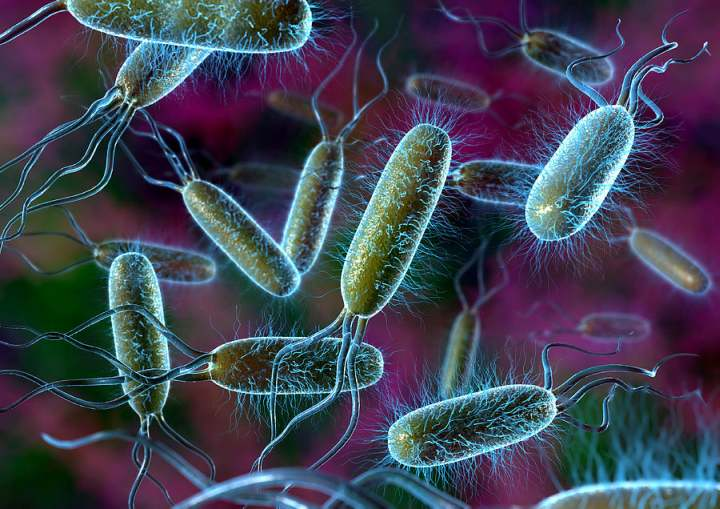
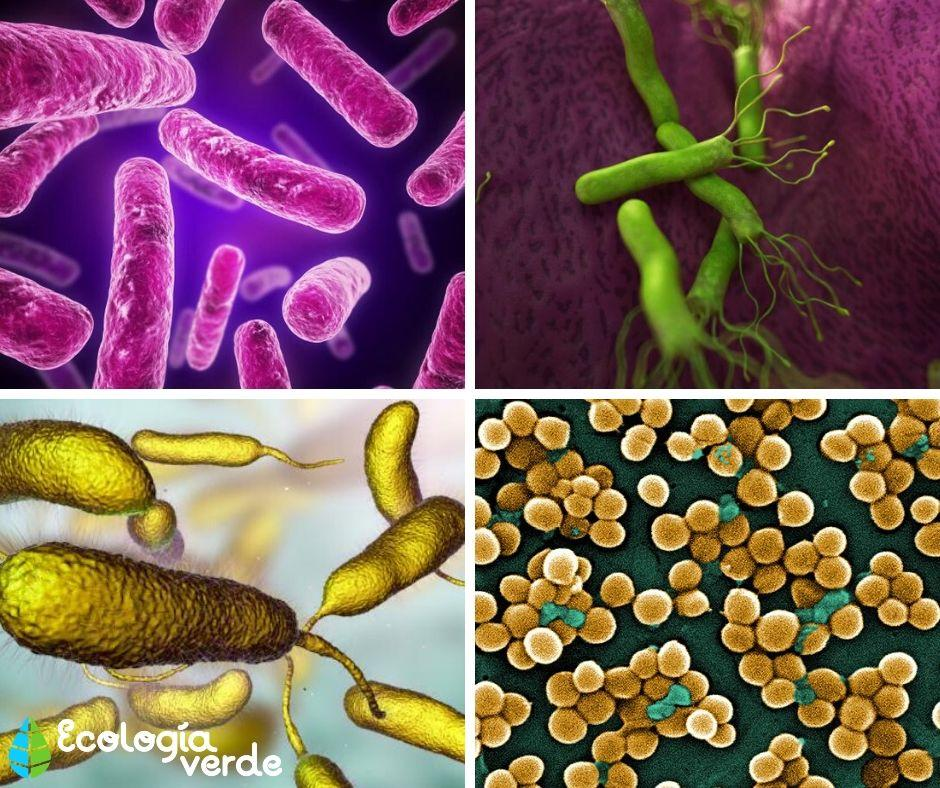
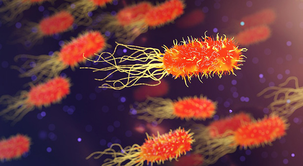
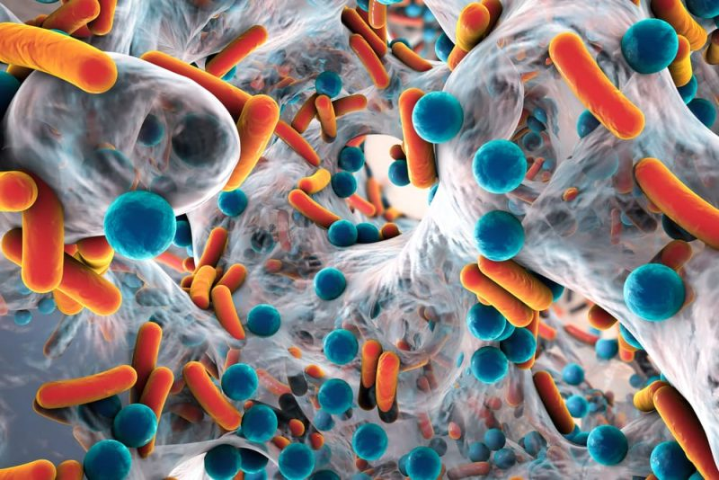

| ¿Qué es el reino monera? |
|---|
|

El reino monera es uno de los grandes grupos en que la biología clasifica a los seres vivos, como el reino animal, vegetal o fungi.
Sólo que en este caso comprende las formas de vida más simples y primitivas que se conocen,
y que por lo tanto pueden ser muy diversas en su naturaleza, aunque presentan características celulares comunes: son unicelulares y procariotas.
Mucho se ignora respecto a la aparición de la vida eucariótica, algo clave en el desarrollo de seres pluricelulares,
a partir de los eucariotas que en tiempos antiguos pertenecieron al reino monera. Una de las teorías más aceptadas propone que un par de estos organismos
unicelulares habrían desarrollado una simbiosis muy estrecha, que llevó a uno a formar parte del cuerpo mismo del otro, ocupándose de algunas funciones internas.
Del modo que sea, el reino monera es filogenéticamente anterior a todos los demás que existen.
|
| CARACTERÍSTICAS DEL REINO MONERA |

Las especies del reino monera pueden ser muy diversas en su morfología y hábitos de vida,
pero tienen características mínimas de simpleza evolutiva y biológica que las unifican, tales como:
- Miden de 3 a 5 micrómetros.Se trata de los seres vivientes más pequeños que existen en el planeta.
- Son unicelulares y procariotasSe trata de organismos unicelulares, o sea, células autónomas que no forman tejidos, ni colonias, ni organismos más complejos, y que además carecen de núcleo celular en donde repose su ADN.
- Sin orgánulos de ningún tipo.A diferencia de las células eucariotas, mucho más grandes y complejas a lo interior, las moneras son células sin “órganos internos” como mitocondrias o plastos, aunque sí poseen estructuras simples que cumplen procesos internos.

- Reproducción asexual.Los procesos de reproducción de las moneras no involucran la meiosis o producción de gametos (células sexuales), sino que implican la fusión binaria y otros procesos en que un individuo da origen a dos idénticos.
- ADN circular.El ADN de estas especies se encuentra suelto en el citoplasma y tiene circular en vez de doble hélice, siendo mucho más simple y pequeño.
- Nutrición.Muchas moneras son heterótrofas (saprófitas, parásitas o simbióticas), o sea, se alimentan de materia orgánica del medio ambiente; pero también pueden ser autótrofas (fotosintéticas o quimiosintéticas), aprovechando la luz solar o las reacciones químicas del entorno para fabricar su propio alimento.
|
| CLASIFICACIÓN |
|---|
LOS 3 GRUPOS

Las moneras abarcan tres grandes grupos, que son:
- Eubacterias.Llamadas “bacterias verdaderas”, poseen un único cromosoma y son las formas de vida celular más simples conocidas sobre la Tierra.
Según su forma pueden clasificarse en bacilos (forma de bastón),
cocos (forma redonda), espirilos (forma de tirabuzón) y vibrios (forma de coma).
- Arqueobacterias.Formas radicalmente distintas de bacteria, que sobreviven aprovechando recursos químicos de hábitats extremos: salinidad, calor, pH, etc.
Se piensa que sean tan numerosas que compongan el 20% de la biomasa terrestre.
- Algas verdeazules.Conocidas como cianobacterias, realizan la fotosíntesis de una manera ligeramente distinta a la de las plantas, y su presencia en la mayoría
de los hábitats les permite formar relaciones simbióticas con otras especies.
|